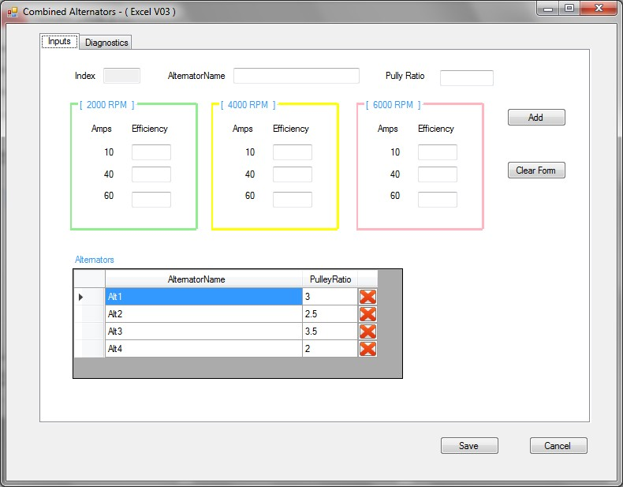
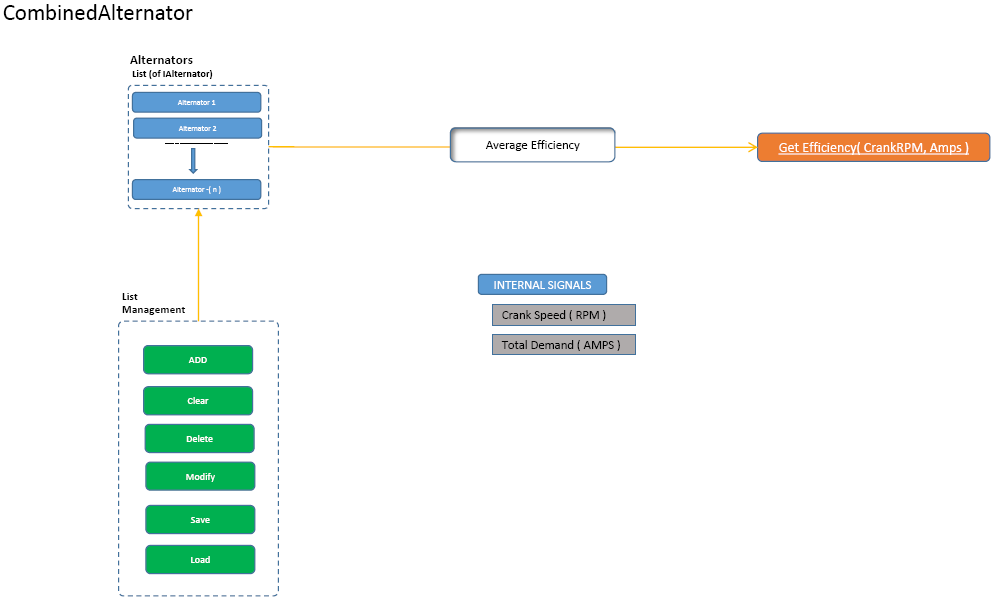
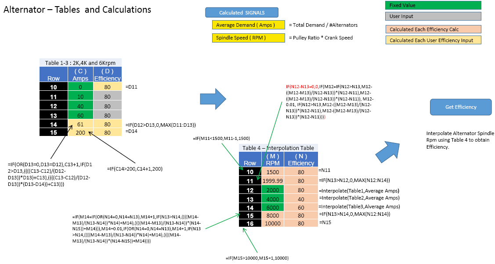
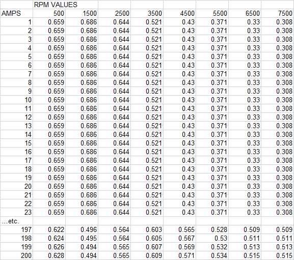

Combined Alternator Map File (.aalt)
The Combined Alternator Map (.AALT) file contains data
relating to the efficiency of the alternator at various engine speeds and
current demand. The .AALT file is a CSV file containing three fields: “Amp”,
“RPM” (engine speed), and “Efficiency”. It can be created via the select file
button, or an existing map directly imported into VECTO via the File Browser.

A new combined alternator map can be created or an existing one edited using
the Combined Alternators editor module (see below). This module creates a
combined average alternator efficiency map using input data for one or more
alternators (Pully Ratio, Efficiency at different RPM/AMP combinations):

Alternators may be added/deleted from the list. Data for existing alternators can be loaded into the form by double-clicking on the relevant alternator, and the data may then be updated and saved back down.
The ‘Diagnostics’ tab provides a summary of the input data and the resulting combined alternator map:

The methodology for calculating the combined efficiency map is summarised below:


File Format
The file uses the VECTO CSV format.
Example Configuration for Advanced Alternator Map

Controls
 Open file browser
if file not listed, open the Combined Alternator Map file (.aalt) if file is
present
Open file browser
if file not listed, open the Combined Alternator Map file (.aalt) if file is
present
 View file contents or navigate to folder
View file contents or navigate to folder
Add button to add a newly defined alternator to the
list
 Update
button, to update data for selected alternator in the list
Update
button, to update data for selected alternator in the list
Delete
button to remove alternator from the list
Clear Form button
 Save and close file
Save and close file
 Cancel
without saving
Cancel
without saving